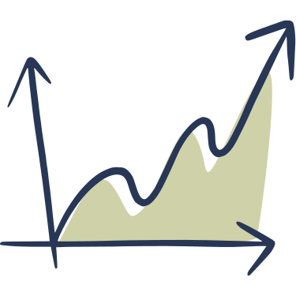

Conciergerie Airbnb à Aix-en-Provence pour propriétaires
Nous gerons votre location saisonniere a Aix-en-Provence de A a Z : creation d'annonce, tarification, accueil voyageurs, menage, linge et assistance locale.
Confiez votre bien a une conciergerie locale pensee pour les proprietaires qui veulent plus de revenus et moins de charge au quotidien.
Avec la conciergerie La Familia optimisez vos revenus, on s'occupe de tout
La Familia, votre conciergerie specialisee en location courte duree a Aix-en-Provence, gere votre bien de A a Z pour maximiser vos revenus, simplifier votre quotidien et offrir une experience fluide a chaque voyageur.
RENTABILITE
Nous optimisons vos revenus locatifs grace a une tarification dynamique adaptee au marche d'Aix-en-Provence et a une diffusion sur les plateformes les plus performantes.
ZERO STRESS
Reservation, accueil, menage, maintenance et assistance voyageurs 7j/7 : nous prenons en charge l'operationnel pour que vous gardiez l'esprit libre.
FLEXIBILITE
Vous restez maitre de votre calendrier et pouvez bloquer votre logement pour un usage personnel quand vous le souhaitez.
Notre conciergerie a Aix-en-Provence prend en charge l'ensemble de la gestion locative courte duree, de la mise en ligne de votre bien sur Airbnb, Booking et Abritel jusqu'au menage, au linge, a la maintenance et au suivi des voyageurs.
Optimiser vos revenus sans gerer l'operationnel au quotidien
Grace a notre expertise en tarification dynamique, en diffusion multi-plateformes et en gestion terrain a Aix-en-Provence, votre bien reste competitif tout au long de l'annee.
Avec La Familia, vous deleguez la gestion locative saisonniere a une equipe locale tout en gardant la maitrise de votre logement.
Une gestion locative saisonniere complete pour votre bien a Aix-en-Provence
Accueil voyageurs et gestion sur place
Accueil des locataires
Remise des clés, accès au manuel de la maison, recommandations touristiques locales.
Disponibilité 24/7
Réponse aux questions et demandes des voyageurs par téléphone, SMS, ou messagerie instantanée.
Gestion des arrivées et des départs
Enregistrement des voyageurs, état des lieux de sortie.
Communication fluide et réactive
Maintien d'un contact régulier avec les voyageurs pour assurer un séjour agréable.
Menage, linge et maintenance du logement
Ménage et entretien
Nettoyage professionnel du logement après chaque départ, fourniture et nettoyage du linge de maison et des serviettes.
Maintenance du logement
Réalisation de petites réparations et de travaux d'entretien, organisation d'interventions de professionnels si nécessaire.
Gestion des fournitures
Approvisionnement en produits d'accueil (savon, gel douche, papier toilette, etc.), mise à disposition de linge de maison.
Contrôle qualité
Vérification régulière du bon fonctionnement des appareils électroménagers et des équipements du logement.
Suivi, assistance et coordination
Résolution des problèmes techniques
Prise en charge des pannes et dysfonctionnements du logement, organisation d'interventions de dépannage si nécessaire.
Gestion des situations d'urgence
Assistance aux voyageurs en cas de problèmes médicaux, d'accidents ou d'autres incidents.
Mise en relation avec des prestataires de services
Recommandation de restaurants, activités touristiques, services de transport, etc.
Pourquoi choisir la conciergerie La Familia ?
Confier votre bien a La Familia, c'est choisir une conciergerie locale a Aix-en-Provence, experte en location saisonniere, capable de gerer votre logement avec reactivite, rigueur et visibilite.

Avantages financiers :
Maximisation des revenus locatifs grâce à une optimisation des prix selon la demande.
Stratégies de réservation intelligentes pour réduire les périodes creuses.
Gestion multi-plateformes (Airbnb, Booking, Abritel, etc.) pour augmenter votre visibilité.
Avantages opérationnels :
Gestion complète et sans stress : accueil des locataires, ménage, maintenance, check-in et check-out.
Suivi professionnel des avis clients pour maintenir une excellente réputation en ligne.
Disponibilité 7j/7 pour répondre aux besoins des locataires et coordonner rapidement les interventions.
Avantages propriétaires :
Tranquillité d'esprit : Vous êtes informé en temps réel de l'état de votre bien et des réservations.
Rapports réguliers sur les performances locatives.
Flexibilité totale : Vous choisissez vos périodes d’occupation personnelle.
Accompagnement local a Aix-en-Provence avec une connaissance fine du marche et des attentes voyageurs.
Foire Aux Questions (FAQ)
L'essentiel
Pourquoi faire appel a une conciergerie Airbnb a Aix-en-Provence ?
La Familia est une conciergerie specialisee dans la gestion de locations saisonnieres a Aix-en-Provence. Nous optimisons vos revenus locatifs, coordonnons l'operationnel et offrons une experience fluide a vos voyageurs.
Dans quels quartiers d'Aix-en-Provence intervenez-vous ?
La Familia opere principalement a Aix-en-Provence et dans ses environs, selon la localisation du bien, son potentiel locatif et son adequation avec la location courte duree.
Sur quelles plateformes diffusez-vous mon logement ?
Nous diffusons votre bien sur des plateformes populaires comme Airbnb, Booking et Abritel, avec une gestion centralisee des annonces et des reservations.
Tarifs et rentabilite
Comment augmenter les revenus de ma location saisonniere a Aix-en-Provence ?
Grace a notre expertise en tarification dynamique, en presentation d'annonce et en gestion complete, nous ameliorons la performance locative de votre bien tout en maintenant une experience voyageur de qualite.
Y a-t-il des frais d'inscription pour commencer ?
Non, il n'y a pas de frais d'inscription pour commencer avec La Familia.
Combien coute une conciergerie de location saisonniere a Aix-en-Provence ?
Nous prenons une commission de 20% sur les revenus generes, sans engagement de duree ni frais d'inscription.
Sécurité
Quelles sont les mesures prises pour assurer la sécurité de mon bien ?
Nous prenons des mesures strictes pour assurer la sécurité de votre bien, y compris des vérifications d'identité des voyageurs et des inspections régulières.
Que se passe-t-il si des voyageurs endommagent ou volent mes biens ?
Nous avons une assurance qui couvre les dommages et les vols causés par les voyageurs.
De quels certificats ai-je besoin pour commencer à héberger avec La Familia ?
Vous aurez besoin de certificats de sécurité et de conformité selon les réglementations locales.
Nous offrons une assistance 24/7 pour répondre à toutes vos questions et résoudre les problèmes éventuels.
Comment puis-je suivre les performances de mon bien ?
Vous recevrez des rapports réguliers sur les performances locatives de votre bien.
Pourquoi Aix-en-Provence reste favorable a la location saisonniere
Une demande locative reguliere
Aix-en-Provence attire toute l'annee une clientele melant tourisme culturel, sejours professionnels et visites familiales.
Cette diversite de profils soutient la demande en location saisonniere sur des periodes plus larges que la seule haute saison estivale.
Pour un proprietaire, cela cree un contexte favorable a une strategie de tarification fine et a une exploitation reguliere du logement.
Des quartiers et adresses recherches par les voyageurs
Le centre historique, les abords du Cours Mirabeau, le quartier Mazarin ou les secteurs proches des axes de transport concentrent une part importante de la demande :
Proximite du centre-ville et des lieux de vie.
Acces facile a pied aux restaurants, commerces et sites culturels.
Bon equilibre entre attrait touristique, confort et accessibilite.
Interet constant pour les logements bien presentes et bien notes.
Valeur percue plus forte pour les biens bien equipes et bien entretenus.
Une conciergerie locale permet d'adapter le positionnement du bien a ces attentes et d'ameliorer sa visibilite sur les plateformes.
Des temps forts qui soutiennent l'occupation
La saison culturelle, les congres, les evenements et les vacances scolaires alimentent la demande a differents moments de l'annee :
Festivals et rendez-vous culturels qui renforcent l'attractivite touristique.
Deplacements professionnels et sejours de moyenne duree.
Week-ends prolonges et periodes de vacances familiales.
Flux de voyageurs francais et internationaux selon les saisons.
Une gestion active du calendrier et des prix aide a capter ces variations de demande plus efficacement.
Un marche favorable aux biens bien geres
Au-dela de la localisation, la performance d'un logement depend aussi de sa gestion quotidienne :
Qualite des photos et de l'annonce.
Reactivite dans les echanges voyageurs.
Menage, linge et maintenance sans faille.
Suivi des avis et ajustement des prix selon la demande.
C'est precisement le role d'une conciergerie a Aix-en-Provence : transformer un bien attractif en location saisonniere performante et durable.